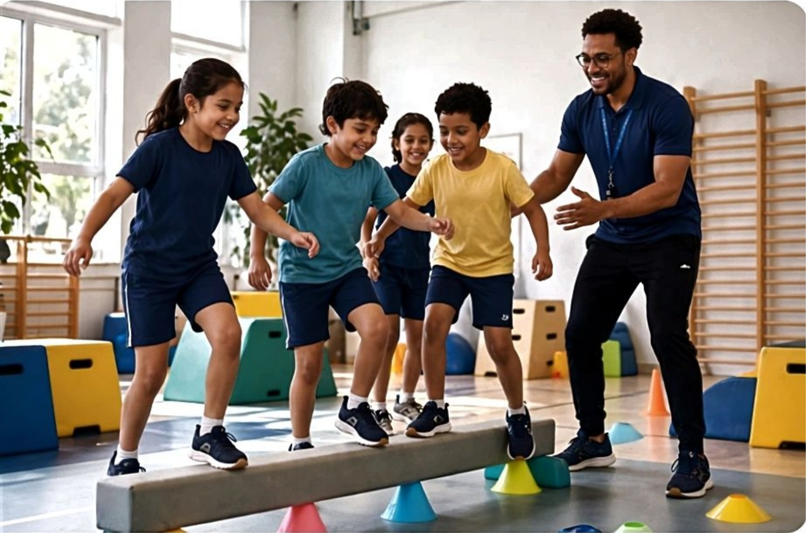
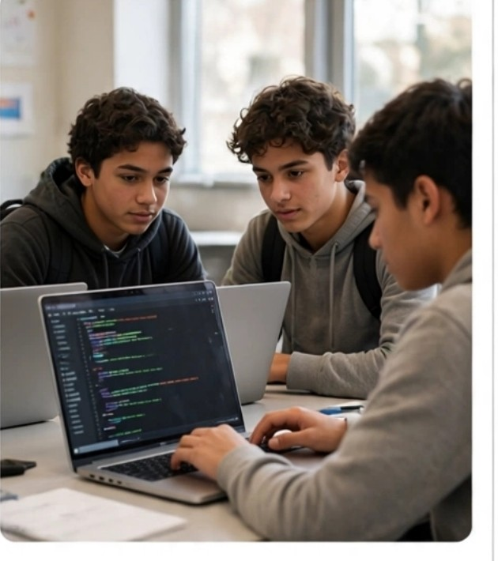
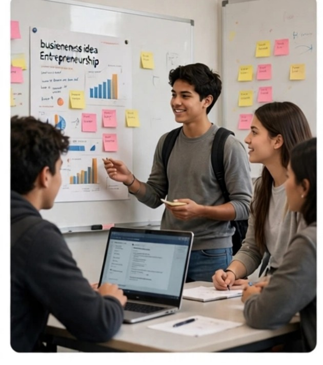

Early Learning
Play, language, number sense, movement, listening skills, and social confidence.
Foundation StartGrades RR to 12
Each phase helps learners master the skills they need now while preparing them for the expectations ahead.
Play, language, number sense, movement, listening skills, and social confidence.
Foundation StartReading, writing, mathematics, creativity, classroom routines, and confidence in daily learning.
Core SkillsBroader subject knowledge, projects, teamwork, study habits, and growing independence.
Building IndependenceAcademic depth, leadership, exam preparation, career awareness, and matric readiness.
Future ReadyLearning Approach
The school brochure describes a fully accredited CAPS curriculum from Grade RR through Grade 12, with an academic foundation intended to prepare learners for tertiary study and beyond.
Individualised education plans are tailored to each learner's strengths and needs, with regular assessments and progress tracking.
Start AdmissionsIndividualised Learning Support
Strandford describes a collaborative approach between learners, teachers, parents, and support specialists.
Plans are tailored to a learner's strengths and needs, with regular assessment and progress tracking.
Structured learning support and focus strategies.
A compassionate, inclusive classroom environment.
Specialised literacy support and reading interventions.
Patient, practical mathematics assistance.
Fine motor skills development and occupational support.

Movement Builds a Stronger Brain
The brochure describes movement sessions with activities for balance, crossing the midline, eye exercises, coordination and rhythm, and core strength.
These activities give learners practical ways to practise movement, balance, and coordination as part of school life.
School of Innovation
The brochure highlights software engineering and digital entrepreneurship pathways for Grades 10-12. Contact the school to confirm current programme details.

Coding in Python and JavaScript, web development, app building, and practical problem-solving.

Business planning, digital marketing, branding, e-commerce, and digital products.